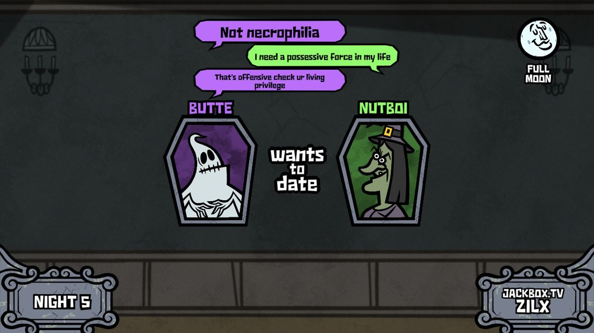
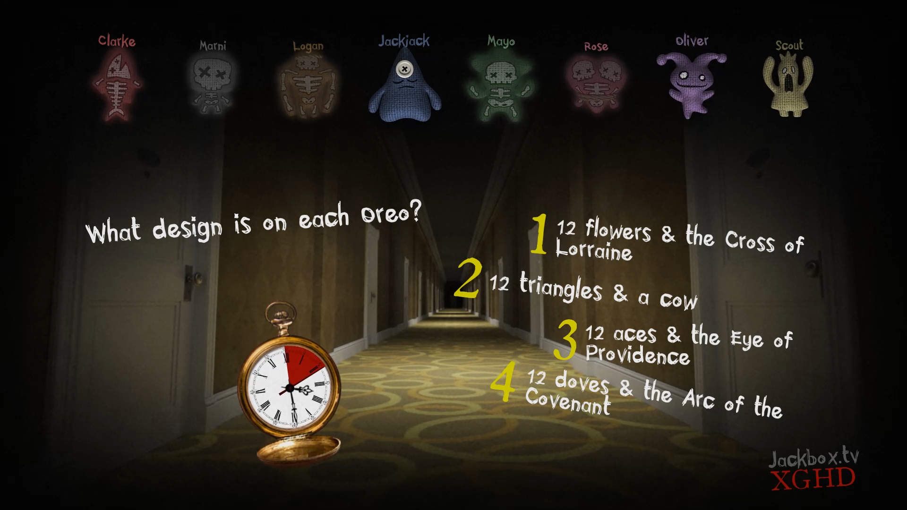

JackBox Reflection: 1. Discuss mechanics and your experience with your peers in the game. Playing JackBox in class was a lot of fun, this was not the first time I played it, and it will definitely not be the last. Playing it with my peers was a bit unusual because I felt I should censor myself, which I usually don't do at all while playing JackBox. I've always enjoyed the simplicity of JackBox games, all you need is you're phone to play, and a person that is willing to host the game. We played Monster Seeking Monster, which was a speed dating game, and Trivia Murder Night, which was a speed trivia game. Monster seeking monster relied more on the social aspect as players would have to try and match with one another to win. It was competetive because it felt the best tactic was to try and be funny so you would be a better match. The part that made this game fun was the secret abilities that every player was given. I was the Zombie, so my task was to try and match with every other player to try and infect them all. Although in hindsight I think this monsters ability is one of the weakest compared to the others. Hopefully the next time I play I will have a stronger character.

2. How does playing with an audience affect the game? Jackbox includes an audience role that acts as another player. I don't know what the maximum count is for the audience but we were able to reach 10 for the first game we played. It seems that the audience role is more powerful in some modes than others, because the monster seeking monster audience player seemed to give automated responses which were not funny at all. However when playing Trivia Murder Night. The audience could also answer the trivia questions which made it really feel like the audience was in the game. I played in the audience that game and we actually did really good earning 2nd place.